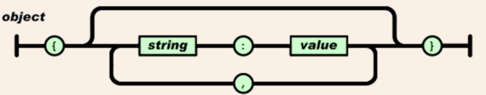
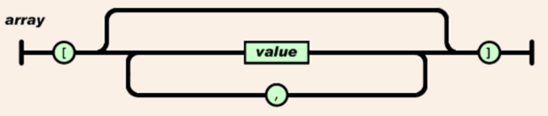
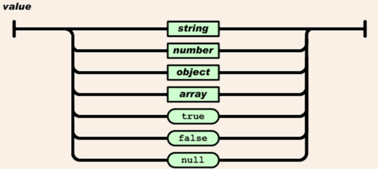
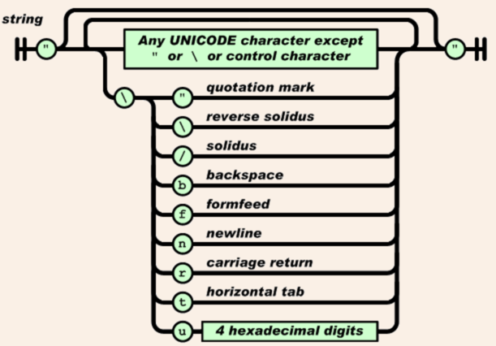
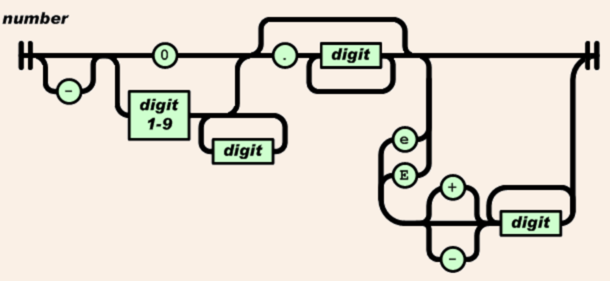

JSON Parser
需求
实现一个 JSON 解析的工具。
什么是 JSON？
JSON(JavaScript Object Notation) 是一种轻量级的数据交换格式。
JSON 的形式
对象 是一个无序的“‘名称/值’对”集合。一个对象以“{”（左括号）开始， “}”（右括号）结束。每个“名称”后跟一个“:”（冒号）；“‘名称/值’ 对”之间使用“,”（逗号）分隔。

Figure 1: object
数组 是值（value）的有序集合。一个数组以“[”（左中括号）开始，“]”（右中括号）结束。值之间使用“,”（逗号）分隔。

Figure 2: array
值 （value）可以是双引号括起来的字符串（string）、数值(number)、true、false、null、对象（object）或者数组（array）。这些结构可以嵌套。

Figure 3: value
字符串（string）是由双引号包围的任意数量 Unicode 字符的集合，使用反斜线转义。一个字符（character）即一个单独的字符串（character string）。
字符串（string）与 C 或者 Java 的字符串非常相似。

Figure 4: string
数值 （number）也与 C 或者 Java 的数值非常相似。除去未曾使用的八进制与十六进制格式。除去一些编码细节。

Figure 5: number
如何做
上面我们说了什么是 JSON。下面我们先用一种简单的方式来实现 JSON 的解析，ANTLR。
使用 ANTLR 我们只需要写一下相应的语法规则就可以了，
关于如何安装只说下 OS X 系统下的，其他参考这里。
cd /usr/local/lib sudo curl -O http://www.antlr.org/download/antlr-4.7-complete.jar export CLASSPATH=".:/usr/local/lib/antlr-4.7-complete.jar:$CLASSPATH" alias antlr4='java -jar /usr/local/lib/antlr-4.7-complete.jar' alias grun='java org.antlr.v4.gui.TestRig'
下面是定义的规则 JSON.g4：
/** Taken from "The Definitive ANTLR 4 Reference" by Terence Parr */
// Derived from http://json.org
grammar JSON;
json
: value
;
obj
: '{' pair (',' pair)* '}'
| '{' '}'
;
pair
: STRING ':' value
;
array
: '[' value (',' value)* ']'
| '[' ']'
;
value
: STRING
| NUMBER
| obj
| array
| 'true'
| 'false'
| 'null'
;
STRING
: '"' (ESC | ~ ["\\])* '"'
;
fragment ESC
: '\\' (["\\/bfnrt] | UNICODE)
;
fragment UNICODE
: 'u' HEX HEX HEX HEX
;
fragment HEX
: [0-9a-fA-F]
;
NUMBER
: '-'? INT '.' [0-9] + EXP? | '-'? INT EXP | '-'? INT
;
fragment INT
: '0' | [1-9] [0-9]*
;
// no leading zeros
fragment EXP
: [Ee] [+\-]? INT
;
// \- since - means "range" inside [...]
WS
: [ \t\n\r] + -> skip
;
我们再写一个测试文件：
import java.io.File; import java.util.Scanner; import org.antlr.v4.runtime.ANTLRInputStream; import org.antlr.v4.runtime.CommonTokenStream; import org.antlr.v4.runtime.tree.ParseTree; public class JSONParserTest { public static void main(String[] args) throws Exception { String content = new Scanner(new File("jsonExample.txt")).useDelimiter("\\Z").next(); System.out.println( "JSON File:\n" + content + "\n\n"); ANTLRInputStream input = new ANTLRInputStream( content ); JSONLexer lexer = new JSONLexer(input); CommonTokenStream tokens = new CommonTokenStream(lexer); JSONParser parser = new JSONParser(tokens); ParseTree tree = parser.json(); System.out.println( "ParseTree:\n" + tree.toStringTree( parser ) + "\n"); } }
另外 jsonExample.txt
{ "student": { "id" : "12345678", "prename" : "John", "surname" : "Doe", "address" : { "street" : "Johndoestreet", "postcode" : "99999" }, "email" : "johndoe@doe.com" } }
首先
antlr4 JSON.g4 javac JSON*.java JSONParserTest.java java JSONParserTest
就会打印出解析树：
(json (value (obj { (pair "student" : (value (obj { (pair "id" : (value "12345678")) , (pair "prename" : (value "John")) , (pair "surname" : (value "Doe")) , (pair "address" : (value (obj { (pair "street" : (value "Johndoestreet")) , (pair "postcode" : (value "99999")) }))) , (pair "email" : (value "johndoe@doe.com")) }))) })))
另一种实现方式
这里介绍一种 Python 的实现方式。这个版本只是一个 Demo, 很多小的情况没有覆盖到。 大部分常见的 JSON 结构应该都能解析。 代码部分在 GitHub 上。主要是 scanner 和 decoder 这两个文件。 参考上面 JSON 的几种状态，我们根据状态机很容易就能写出 JSON parser。